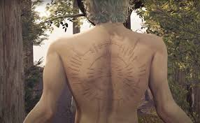

Who is Astarion?
A vampire that has been able to escape from his torturous master Cazador. He seeks revenge for the atrocities Cazador committed against him
Traits of Astarion
- One with the shadows and is deadly with a dagger
- Likes to play with his prey before feasting
- Nothing will stop him from killing Cazador

Cazador branded a "poem" on Astarion's back
Adventuring Party